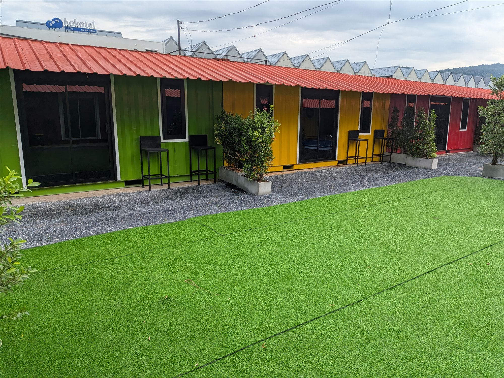

Хостел из контейнеровАо Нанг, Краби
Ваш яркий уголок у самого пляжа.
Четырёхместные номера с кондиционером и теплоизоляцией в ярко раскрашенных морских контейнерах — вокруг бассейна и зелёного двора, в нескольких шагах от пляжа Нопарат Тара.

The Beach Box
- 4кровати в номере, не больше
- Кондиционерв каждом контейнере с теплоизоляцией
- Бассейни зелёный двор
- 30 шаговдо пляжа Нопарат Тара
- 300 мдо ночного рынка Landmark
Пришлите нам даты в WhatsApp или LINE, и мы оставим кровать за вами.
От
฿ —
за кровать за ночь
Маленькие номера, яркие цвета и море через дорогу
The Beach Box построен из переоборудованных морских контейнеров. Каждый выкрашен в свой цвет, и все они выстроились под красной крышей вокруг зелёного двора. В каждом номере четыре кровати и свой кондиционер, так что соседей у вас трое, а не тридцать.
Выходите за ворота — и вы уже на дороге вдоль пляжа. До ночного рынка, кафе и круглосуточного 7-Eleven три-четыре минуты пешком.


Всего четыре кровати в номере
Забронируйте одну кровать или займите весь номер с друзьями. Душевые и туалеты находятся в отдельном блоке, в нескольких шагах от вашей двери.
Посмотреть номераЧетырёхместный номер-контейнер
- Четыре кровати в номере
- Кондиционер в каждом номере
- Стены контейнера с теплоизоляцией
- Общие душевые и туалеты в отдельном блоке
Есть где освежиться
Бассейн в нескольких шагах от кровати и зелёный двор, где у каждой двери можно посидеть.
Посмотреть удобства

Пляж напротив, ночной рынок за углом
Мы находимся в той части Ао Нанга, что ближе к пляжу Нопарат Тара: здесь спокойнее, отсюда на острова ходят лодки-лонгтейлы, а ночной рынок Landmark совсем рядом.
Что рядом| Место | Пешком |
|---|---|
| Пляж Нопарат Тара | около 30 шагов |
| Starbucks, Ao Nang Landmark | 180 м · 3 мин |
| 7-Eleven (круглосуточно) | 230 м · 3 мин |
| KFC, Ao Nang Landmark | 240 м · 3 мин |
| Ночной рынок Ao Nang Landmark | 300 м · 4 мин |

Острова начинаются в конце дороги
Расскажите, чего вам хочется, и мы подскажем подходящую поездку: в группе или индивидуально, на лонгтейле или на спидботе, на полдня или на целый день.
Посмотреть экскурсии и поездки
- По островамОт ฿ —
- На водеОт ฿ —
- На сушеОт ฿ —
- Попробовать и научитьсяОт ฿ —
От аэропорта Краби до вашей кровати
Наш трансфер, такси или шаттл. Ещё до прилёта подскажем, сколько это будет стоить.
Как до нас добратьсяНаш трансфер
฿ —
Такси или шаттл из аэропорта
฿ —
Совет путешественника
฿ —
Напишите нам, как вам удобно
Пишите в том приложении, которым уже пользуетесь. Мы отвечаем на английском и тайском.